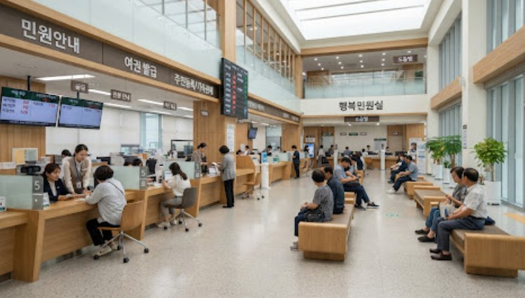

OFFICE
사무실 · 회의실
외근·회의로 자리가 자주 빕니다. 회의가 시작되면 미리 온도를 낮추고, 비면 10분 뒤 절전합니다.
OccuCool은 천장 카메라의 온디바이스 AI로 구역별 인원수를 세어 에어컨의 전원·온도·풍량을 스스로 조절합니다. 영상은 기기 안에서 바로 지우고, 인원수만 남깁니다.
6~10명 구간입니다. 기본 26°C에서 1°C 낮추고 풍량을 올립니다.
사무실·학교·공공시설은 냉난방을 고정 스케줄이나 수동 조작으로 운영합니다. 기존 센서는 '사람이 몇 명 있는지'를 알지 못해 낭비와 민원이 함께 생깁니다.
| 방식 | 인원수 파악 | 반응 속도 | 한계 |
|---|---|---|---|
| 고정 스케줄 타이머 | 불가 | 반응 없음 | 실제 재실과 무관하게 동작하고, 초과·휴일 근무를 반영하지 못합니다. |
| PIR 모션센서 | 불가 | 즉시 (움직임만) | 가만히 앉아 있으면 공실로 오판합니다. |
| CO₂ 센서 | 간접 추정 | 수 분~십수 분 지연 | 환기 상태에 따라 수치가 달라져 추정이 부정확합니다. |
| 수동 조작 | 사람이 판단 | 담당자에 따라 다름 | 퇴근 후 끄는 것을 놓치기 쉽고 담당자 의존도가 높습니다. |
| OccuCool | ±1명 정확도 95% | 5초 이내 | 열부하의 원인인 사람 수를 직접 세어 선제적으로 제어합니다. |
앉아 있거나 일부가 가려진 사람, 어두운 조명까지 세려면 규칙 기반 센서가 아닌 객체 검출 모델이 필요합니다.
성인 1명은 약 100~120W(가정)의 열을 냅니다. 인원수를 알면 열부하를 계산해 온도와 풍량을 정량적으로 맞출 수 있습니다.
영상을 기기 밖으로 보내지 않아 프라이버시를 지키고, 네트워크가 끊겨도 제어가 멈추지 않습니다.
모든 판단은 천장에 달린 컨트롤러 안에서 이뤄집니다. 클라우드는 기록과 리포트만 담당합니다.
광각 카메라가 영상을 처리하고, 온습도 센서와 에어컨 상태를 함께 읽습니다.
NPU에서 머리·상체 검출 모델이 인원을 세고, 5초 중앙값으로 깜빡임을 걸러냅니다.
인원 구간에 따라 목표 설정온도와 풍량을 정하고, 보호 규칙을 확인합니다.
IR 또는 Modbus·BACnet으로 전원·온도·풍량·모드 명령을 보냅니다.
에어컨 상태를 다시 읽어 적용을 확인하고, 계속 실패하면 담당자에게 알립니다.
150㎡ 구역, 냉방 기본 26°C·난방 22°C 기준 가정값이며 현장에서 조정할 수 있습니다.
파일럿 현장(창 없음, LED 상시 점등, 최대 5명)은 조명이 안정적이라 화질 보정은 거의 필요 없습니다. 대신 시간축 안정화, 카메라 커버리지 보완, 센서·에어컨 상태의 신뢰성에 전처리를 집중합니다.
천장 2.4m에 90° 렌즈를 중앙에 달면 머리 높이(1.7m)에서 보이는 폭이 2×0.7m×tan45° ≈ 1.4m뿐입니다. 100~300㎡를 1대로 덮으려면 사선 설치나 어안 렌즈가 사실상 필수입니다.
1인당 현열 70~100W라 5명이어도 0.5kW 수준으로, 수~10kW급 카세트 용량에 비해 작습니다. 그래서 인원수를 그대로 쓰지 않고 재실 단계(0명 / 1~2명 / 3~5명)로 묶어 제어에 넣습니다.
원본 저장 불가 조건이므로 프레임은 RAM에서 추론 직후 폐기하고 박스·트랙 ID·카운트만 남깁니다.
조명이 일정하므로 자동 노출이 사람 출입에 반응해 밝기를 흔드는 것을 막는 편이 CLAHE보다 효과적이고 연산도 들지 않습니다.
창 없음, 상시 점등, 야간 재실 없음이라 조도 변동 요인이 없습니다.
천장·벽과 시야 밖 영역을 제외하면 오검출과 연산을 함께 줄일 수 있습니다.
사선 설치에서는 먼 쪽 사람이 작게 찍히므로, 원본 해상도로 잘라 따로 추론해 작은 객체 미검출을 막습니다.
저밀도라 NMS는 표준값으로 충분하고, 주로 서서 이동하므로 서 있는 사람 비율의 종횡비 필터가 잘 맞습니다.
5명 이하·가림 없음이라 IoU 기반 트래커로 충분하며, 순간 미검출을 트랙 유지로 메워 카운트를 안정화합니다.
90° 렌즈는 왜곡이 작으므로 전체 프레임 대신 검출된 발 위치 좌표만 보정해 연산을 아낍니다.
사선 시점에서는 박스 중심이 아닌 발 위치를 바닥 좌표로 투영해야 구역 경계 판정이 정확합니다.
1~2프레임 순간 미검출·오검출(스파이크)을 제거하는 데 이동평균보다 강건하고 정수 특성도 유지됩니다.
급변 이벤트가 거의 없는 현장이라 급변은 오류일 가능성이 높아 민감도를 높게 둘 수 있습니다.
온습도 측정 주기(10초 이하)와 시간축을 맞추기 위해 구간 중앙값으로 집계합니다.
입실은 빠르게(30초), 공실 확정은 느리게(5분) 판정해야 재실자가 있는데 에어컨이 꺼지는 최악의 오제어를 막습니다.
2명↔3명 경계에서 단계가 진동해 설정온도가 반복 변경되는 것을 막습니다 (±1명 여유, 2분 유지).
센서 고장이나 통신 오류로 들어오는 0℃, 100%RH 같은 불가능한 값을 1차로 차단합니다.
밀폐되고 열원이 없는 실내에서 10초 만에 1℃ 이상 변하는 것은 물리적으로 비정상이라 스파이크로 판정합니다.
단일 센서라 교차 검증이 불가능하므로 자기 시계열 기준의 강건한 이상치 탐지가 필요합니다.
Wi-Fi 통신이라 짧은 누락이 생길 수 있어, 직전값 유지 → 선형 보간 → 무효 처리로 누락 길이별 처리를 달리합니다.
천장형 카세트의 토출 기류 영향을 받기 쉬워, 기준 온도계와 24시간 비교한 편차를 보정합니다.
제어 신호에 남은 미세 잡음을 줄여 Deadband 근처에서 명령이 떨리는 것을 막습니다 (α=0.2, 시정수 약 45초).
냉방 중에는 온도가 내려가며 상대습도가 저절로 오르므로, 상대습도만으로 제습을 켜면 오작동합니다. 이슬점 기준이 더 정확합니다.
상태는 변경 시점만 기록되므로, 다른 시계열과 합치려면 10초 그리드의 연속 상태로 펼쳐야 합니다.
IR 명령은 전달이 실패할 수 있어, 30초 안에 피드백 상태와 비교해 실패를 감지하고 최대 2회 재전송합니다.
명령 없이 상태가 바뀌면 사람이 조작한 것으로 보고 자동 제어를 보류하며, 그 구간을 사용자 선호 데이터로 분리 저장합니다.
냉방 효과가 실내 센서에 나타나기까지의 지연을 알아야 제어 판단에서 과잉 반응을 막을 수 있습니다.
외기는 천천히 변하므로 강하게 평활화해도 정보 손실이 없고, 일사나 실외기 배기에 의한 순간 스파이크를 없앨 수 있습니다.
비운영 시간 탐지를 이상 알림으로 분기하고, 운영 시작 전 예냉 구간을 정의합니다.
대시보드와 절감량 계산에 필요한 단위로 변환합니다.
피드백 상태와 교차 검증할 수 있고, 압축기의 실제 ON/OFF 횟수도 파악됩니다.
IPMVP 방식 B를 참고해 날씨와 재실 차이를 보정해야 도입 전후 절감률을 공정하게 비교할 수 있습니다. 대시보드 전용이며 제어에는 쓰지 않습니다.
모든 장치는 NTP로 맞추고 엣지 기기를 마스터 시계로 둡니다. 영상 카운트에는 추론 완료가 아닌 프레임 캡처 시각을 기록합니다.
이후 단계가 영상을 필요로 하지 않게 설계해야 원본 미저장 조건이 구조적으로 보장됩니다.
경계에 선 사람이 두 구역에서 번갈아 세어지지 않도록, 트랙 단위로 할당해야 히스테리시스를 걸 수 있습니다.
사선 시점에서는 박스 중심이 실제 위치보다 카메라 반대쪽으로 밀려 보입니다.
구간을 집계한 뒤에는 스파이크가 정상값과 섞여 분리할 수 없습니다.
순서가 반대면 스파이크를 기준점으로 보간해 오류가 주변 구간까지 퍼집니다.
보정 전 값으로 임계값을 비교하면 기준이 어긋나고, 이슬점은 비선형이라 한쪽만 보정하면 오차가 커집니다.
이상치가 섞인 데이터로 평균·표준편차를 구하면 스케일이 왜곡되고, 학습 통계를 고정해야 운영 중 분포가 흔들리지 않습니다.
입력 전처리가 아무리 좋아도 출력단 보호가 없으면 압축기 단주기 운전이 생길 수 있습니다.
| 데이터 | 짧은 결측 | 중간 결측 | 긴 결측 |
|---|---|---|---|
| 영상 카운트결측을 공실로 보면 재실자가 있어도 꺼짐 | 30초 이내: 직전 재실 상태 유지 | 30초~5분: 재실 유지, 공실 전환 금지 | 5분 초과: 카메라 이상 알림, 스케줄 기반 운전 |
| 온습도공간 열용량이 커서 5분 내 변화는 거의 선형 | 30초 이내: 직전값 유지 | 30초~5분: 선형 보간 + 보간 플래그 | 5분 초과: 무효 처리, 안전 모드 |
| 에어컨 상태상태를 모른 채 명령을 쌓으면 오제어 누적 | 마지막 명령 기준으로 상태 추정 | 1분 이상 불일치: 재전송 | 불일치 지속: 알림, 자동 제어 중단 |
| 외기보조 변수라 없어도 제어 가능 | 5분 이내: 직전값 유지 | 5~30분: 선형 보간 | 30분 초과: 외기 제외 모드 |
| 에너지제어 영향 없음, 절감률 신뢰도용 | 적산값 보간 | 운전 상태로 소비전력 추정 | 결측 표시, 절감량 계산에서 제외 |
모든 값에 품질 플래그(정상 / 보간 / 추정 / 무효)를 함께 저장해, 나중에 모델을 학습할 때 보간·추정 구간을 제외하거나 가중치를 낮출 수 있게 합니다.
사각에 있는 재실자를 놓치면 공실로 판정돼 에어컨이 꺼집니다.
대응공실 확정 지연을 길게, 원거리 타일 추론, 결측은 재실로 해석. 출입구를 거치지 않고 사라진 트랙은 일정 시간 재실로 유지합니다.
한두 명의 짧은 출입만으로 재실·공실이 반복 전환됩니다.
대응비대칭 Debounce(입실 30초·공실 5분)와 압축기 최소 ON/OFF. 공실 시 바로 끄지 않고 Setback(+2℃) 후 OFF하는 2단계 전략.
토출 기류가 닿으면 실제보다 낮게 측정돼 냉방을 일찍 멈춥니다.
대응기류가 닿지 않는 내벽 1.2~1.5m에 설치하고 오프셋 보정. 냉방 직후 비정상 급강하는 기류 의심 플래그로 감시합니다.
IR 전달 실패로 '켰다고 믿는 상태'가 어긋나면 이후 판단이 모두 틀어집니다.
대응30초 내 피드백 대조, 재전송 후에도 불일치면 알림. 명령 없는 상태 변화는 수동 조작으로 라벨링하고 자동 제어를 보류합니다.
온도가 내려가면 수증기량이 그대로여도 상대습도가 올라갑니다.
대응이슬점·절대습도를 함께 보고 진입·해제에 히스테리시스와 지속 시간 조건. 보간 플래그가 붙은 값으로는 모드를 바꾸지 않습니다.
수치는 파일럿 현장 조건에서 출발하는 초기 추정치이며, 정답 라벨과 1~2주 그림자 모드(명령 없이 판단만 기록) 로그로 튜닝합니다. 출처: 현장 맞춤 전처리 설계안 (report/preprocess_report.md)
첫 출근을 5초 안에 감지해 26°C로 냉방을 켭니다.
회의가 시작되자 더워지기 전에 24°C, 풍량 최대로 미리 낮춥니다.
점심시간. 바로 끄지 않고 10분 유예를 기다립니다.
여전히 비어 있어 절전 모드로 전환합니다. 압축기 보호 간격은 지킵니다.
복귀 인원을 감지해 25°C, 풍량 증가로 다시 가동합니다.
직원이 리모컨으로 온도를 바꾸면 2시간 동안 그 설정을 우선합니다.
유예 10분 후 자동 OFF. 끄는 걸 잊을 일이 없습니다.
영상은 기기 메모리에서 처리하는 즉시 폐기됩니다. 밖으로 나가는 데이터는 숫자뿐입니다.
외근·회의로 자리가 자주 빕니다. 회의가 시작되면 미리 온도를 낮추고, 비면 10분 뒤 절전합니다.
시간표와 실제 출석이 다릅니다. 빈 강의실은 끄고, 수강 인원이 많은 수업은 풍량을 높입니다.

시간대마다 방문객 수가 크게 달라집니다. 운영 종료 후 꺼짐 누락도 자동으로 막습니다.
모든 목표에는 측정 방법이 정해져 있습니다. 파일럿에서 실측으로 확인한 뒤 확대합니다.
도입 전후 구역별 전력량 비교
재실 중 설정온도 ±1.5°C 이내 시간
조작 로그 · 민원 접수 건수
MAE 0.5명 이하 · 테스트셋 1,000장+
이벤트 · 명령 로그 타임스탬프
명령 후 상태 재조회 기준
복구 후 로그 누락 0건
장치 헬스체크
영상 추론은 NPU가, 실시간 제어는 별도 MCU가 맡아 서로의 장애가 번지지 않게 나눴습니다.
시설 20개소, 컨트롤러 120대 도입을 가정한 시뮬레이션입니다. 모든 금액은 가상의 값입니다.
조건부 Go. 회수기간 24개월 이내 기준을 충족합니다.
| 초기 투자비 (CAPEX) | |
|---|---|
| 컨트롤러 120대 × 45만 원 | 5,400만 원 |
| 에어컨 연동 모듈 · 설치 · 시운전 | 3,240만 원 |
| AI 모델 개발 · 현장 튜닝 | 6,000만 원 |
| 클라우드 · 대시보드 구축 | 2,000만 원 |
| 합계 | 1억 6,640만 원 |
| 월 절감액 (기준 15%) | |
| 냉난방 전기료 (월 8,000만 원 × 절감률) | 1,200만 원 |
| 인건비 · 설비 손실 감소 | 480만 원 |
| 월 운영비 (OPEX) | |
| 클라우드 · 유지보수 · 재학습 · 전력 등 | 350.4만 원 |
출시 전 3~5개소 파일럿에서 실측 절감률 10% 이상, 인원 계수 정확도 95% 이상을 검증해야 합니다. 24개월 안에 회수하려면 절감률이 약 7% 이상이어야 합니다.
v1에서 하지 않는 것개인 식별·얼굴 인식, 영상 저장·스트리밍, 음성 제어, 조명·환기 제어, 건물 전체 BEMS 통합, 다국어 지원